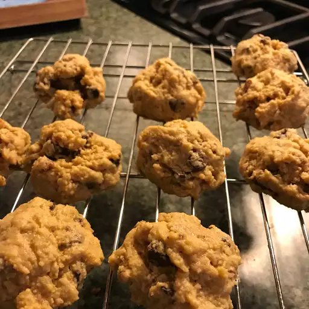

Chickpea Cookies

Delicious and Decadent
These cookies are gluten-free, and have great taste and texture, like better gourmet cookies. The flour is entirely chickpea with a touch of corn starch. The peanut butter removes the strange chickpea-flour taste. A little extra vanilla wouldn't hurt things either. These are really good!
Ingredients:
- 1 cup brown sugar, packed
- ¾ cup butter, softened
- ⅓ cup peanut butter
- 1 egg
- 1 teaspoon vanilla extract
- 2 cups chickpea flour
- 2 tablespoons cornstarch
- 1 teaspoon baking powder
- ½ teaspoon salt
- 1 cup chocolate, chopped
- ½ cup oats
Steps:
- Preheat oven to 350 degrees F (175 degrees C). Grease a baking sheet.
- Beat brown sugar, butter, peanut butter, egg, and vanilla extract together in a bowl.
- Whisk chickpea flour, cornstarch, baking powder, and salt together in a bowl. Stir flour mixture into peanut butter mixture. Stir chocolate, oats, and walnuts into peanut butter mixture until dough is evenly combined. Cover the bowl with plastic wrap and refrigerate dough until chilled, about 15 minutes.
- Form dough into tablespoon-sized balls and place 2-inches apart on prepared baking sheet.
- Bake in the preheated oven until brown, about 12 minutes. Let cool on baking sheet for 3 to 5 minutes; transfer to a wire rack to cool completely.